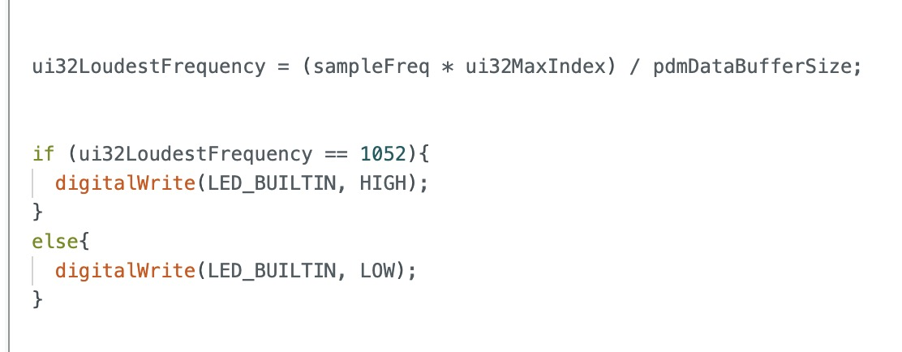

Lab 1A: Artemis Board
The goal of this lab was familiarize myself with the Redboard Artemis Nano board and the Arduino IDE through built-in examples and writing a short program.
Prelab
Install the latest version of the Arduino IDE and Sparkfun Apollo3 Board’s manager. Copy the json link from here and add it to the Arduino settings.
Connect the Artemis board to the computer via USB. Run the examples below.
Blinky
Blinky switches the onboard LED on and off.
Serial
The Serial example tests and verifies serial communication between the board and my computer, which is crucial for debugging as it enables me to monitor the board’s activity.
Temperature Readings With Analog Read
This example displays temperature readings from the onboard sensor on the serial monitor. When I apply heat, the temperature readings rise, indicating that the sensor and the analog read function are working.
Microphone Output
This example displays the loudest frequencies detected by the microphone on the serial monitor. When I make a noise, the frequency changes printed on the serial monitor are obvious.
C Note Detection With LED Indication
In this program, the LED lights up when the board detects the frequency of the C note and stays off for all other frequencies. I used a conditional statement in the printLoudest function for its implementation. 
Discussion
This lab was helpful in familiarizing myself with the peripherals and functionality of the Artemis Board Nano, including sensor data acquisition to audio processing and communication tasks.